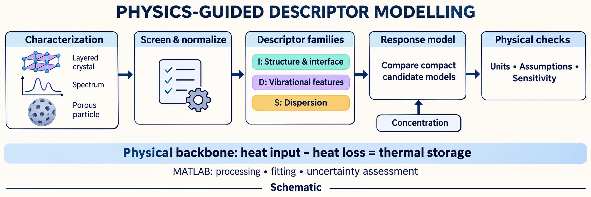

Characterization
Extract structural, chemical, vibrational, porosity, and dispersion information.
Connecting material characterization with response through meaningful descriptors, explicit assumptions, and compact mathematical relationships.

My framework organizes characterization-derived variables before fitting response relationships. Physical reasoning guides the inputs, transformations, targets, and interpretation.
Extract structural, chemical, vibrational, porosity, and dispersion information.
Screen variables and construct explicit, interpretable material coordinates.
Compare compact relationships with concentration and selected material descriptors.
Regression parameters remain estimated from observations. Physics supplies constraints and interpretation; this is not a first-principles calculation of optical absorption.
| Check | Question | Why it matters |
|---|---|---|
| Comparability | Are the measured features physically equivalent? | Prevents unrelated peaks or measurement definitions from being compared. |
| Completeness | Are inputs available and quantifiable? | Missing and below-threshold values require explicit treatment rather than automatic zeros. |
| Acquisition sensitivity | Could instrument settings dominate the quantity? | Limits reliance on uncontrolled absolute intensity. |
| Redundancy | Do variables repeat the same information? | Reduces duplicated influence and unstable predictor combinations. |
| Assumption dependence | Is the quantity measured or model-derived? | Separates independent inputs from assumed-parameter outputs. |
| Circularity | Was the variable derived from the response? | Avoids reusing response information as an independent predictor. |
Selected inputs are placed on a common scale. Feature direction and weighting are documented as part of the score definition.
Constant-valued features require exclusion or separately defined treatment.
Combines apparent stacking coherence, FTIR B2 band-area fraction, F/Ti, and pore diameter.
Lc uses the inverted direction specified by this study's score definition.
Retains a selected corresponding Raman-shift variable as a vibrational-change coordinate.
Distinct from linewidth-based broadening and a universal measure of disorder.
Combines electrokinetic magnitude and operational hydrodynamic size.
DLS size can include aggregates; it is not a direct sheet-width measure.
Concentration describes an experimental condition. Material scores summarize characterization. Reduced candidate models keep those roles explicit.
Purpose: represent concentration dependence alongside a selected material descriptor.
C0 is a reference concentration that makes the logarithm dimensionless. No fitted coefficients are displayed here.Linear, logarithmic, power-law, and saturation forms express different concentration dependencies. Physical motivation guides the candidates; model checks assess their support.
This saturation candidate permits diminishing increments. A fit alone does not establish an optical or aggregation mechanism.
Thermal storage, input, and loss define the physical meaning of the response target. Measured, fitted, and extrapolated quantities remain distinct.
The equilibrium relation assumes constant effective input. A finite-time switch-off estimator is not silently substituted for equilibrium heat input.
Descriptor choices affect the relationship. Assessment examines alternative definitions, residual structure, parameter stability, and uncertainty alongside model complexity.
| Assessment | Purpose |
|---|---|
| Descriptor alternatives | Compare FTIR fractions with ratios, pore measures, and linear versus logarithmic size transforms. |
| Residual inspection | Identify systematic behavior the candidate model does not capture. |
| Parameter stability | Examine dependence on individual observations and correlated predictors. |
| Complexity | Limit adjustable terms to what the available material set can support. |
| Uncertainty | Track contributions from transient fitting, reference calibration, and descriptor construction. |
| Validation scope | Distinguish interpolation within measured conditions from prediction for new materials. |